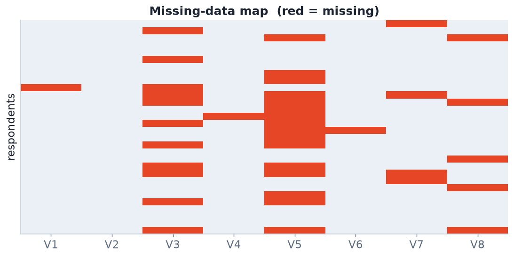
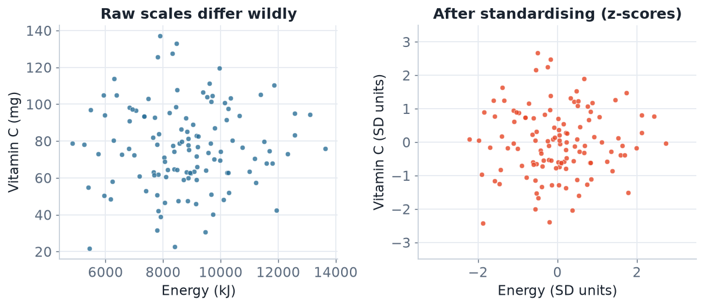

Garbage in, garbage out. How to turn a messy survey into an analysis-ready matrix.
Each row = one observation, each column = one variable, each cell = one value. Your goal is a clean numeric/factor matrix.
Never edit the raw file by hand. Every fix lives in a script so it can be re-run, reviewed, and trusted (GQ4).

A missing-data map reveals patterns: variable V5 has a block of missing values (possible skip-logic), while others are scattered.
MCAR — missing completely at random (rare, benign).
MAR — missingness depends on observed variables (handle by conditioning).
MNAR — depends on the unobserved value itself (dangerous, e.g. under-reporting high intake).
| Strategy | When | Risk |
|---|---|---|
| Complete-case (drop rows) | Few, MCAR | Bias + lost power if not MCAR |
| Mean/median imputation | Quick baseline | Shrinks variance, distorts correlations |
| Model-based / kNN imputation | MAR | Needs care, can leak |
Multiple imputation (mice) | Principled inference | More complex |
Energy intake of 80,000 kJ/day? Age of 200? Negative weight? Define plausible ranges and flag violations.
Prefer median & IQR over mean & SD when hunting outliers — the mean is itself dragged by the outlier.

Energy (kJ) and Vitamin C (mg) live on different scales. Distance-based methods (k-means, PCA, k-NN) are dominated by the large-scale variable unless you standardise.
log-transform skewed intakes; min–max scale to [0,1]; encode categoricals as factors / dummies.
library(tidyverse)
clean <- raw %>%
janitor::clean_names() %>% # tidy column names
distinct() %>% # drop duplicate rows
mutate(sex = factor(sex),
energy_kj = na_if(energy_kj, 0)) %>% # 0 = not recorded
filter(between(age, 18, 100)) %>% # logic check
mutate(across(where(is.numeric), # standardise numerics
~ as.numeric(scale(.))))
skimr::skim(clean) # profile the result%>% so the whole pipeline is one auditable object.A dietary record reads:
age = 24, sex = "F ", energy_kj = 0, veg_serves = -1, vitc_mg = 4200, height_cm = 168
mutate()/filter() lines that would handle them.